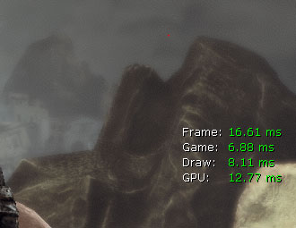
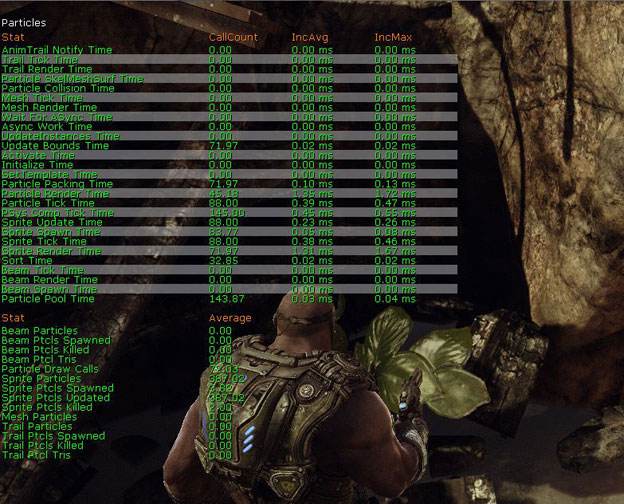
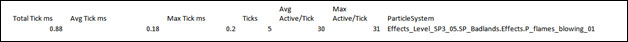

UDN
Search public documentation:
VFXOptimizationConceptsJP
English Translation
中国翻译
한국어
Interested in the Unreal Engine?
Visit the Unreal Technology site.
Looking for jobs and company info?
Check out the Epic games site.
Questions about support via UDN?
Contact the UDN Staff
中国翻译
한국어
Interested in the Unreal Engine?
Visit the Unreal Technology site.
Looking for jobs and company info?
Check out the Epic games site.
Questions about support via UDN?
Contact the UDN Staff
UE3 ホーム > パーティクルとエフェクト > パーティクルシステム > 「Unreal Engine 3」における VFX の最適化 > VFX の最適化 : 中心的な概念
UE3 ホーム > FX アーティスト > 「Unreal Engine 3」における VFX の最適化 > VFX の最適化 : 中心的な概念
UE3 ホーム > FX アーティスト > 「Unreal Engine 3」における VFX の最適化 > VFX の最適化 : 中心的な概念
VFX の最適化 : 中心的な概念
GPU、レンダリングスレッド、ゲームスレッドの問題を特定する
- コンソール上でゲームを起動します。
- tab キーを押し、stat unit と入力します。

STAT PARTICLES (パーティクルの統計) コマンドを使用して、それぞれのスレッド上におけるパーティクルの時間を判定します。

STAT PARTICLES によって、ゲームスレッドおよびレンダリングスレッドに関係する複数の統計項目がリスト表示されます。Draw Calls (描画コール) (レンダリングスレッド) と Tick Time (ティック時間) (ゲームスレッド) に注目してください。
ゲームスレッド関連の問題に取り組む
ParticleTickStats (パーティクルティック統計) コマンドを使用することによって、どのシステムが主要因となっているのかを判定します。
ParticleTickStats コマンドには、3 つの引数があります。
- Single - この引数が渡されると、単一のフレームがキャプチャされ、ファイルに書き出されます。
- Start - この引数によって、統計情報のキャプチャリングが開始されます。
- Stop - この引数は、統計を終了させて、一定期間のティック時間が表示されるようにします。
[UE3 Directory]\[YourGame]\Profiling\PSTick-[sys time].csv
スプレッドシートが、行と列に分解されて、エフェクトによるコストの概略が示されます。

- Total Tick ms
- 当該パーティクルシステムのインスタンスをすべてティックするのに要した合計時間です。
- Avg Tick ms
- 当該パーティクルシステムをティックするのに要した平均時間です。(Total Tick÷Ticks)。
- Max Tick ms
- 当該パーティクルシステムのインスタンスに要した最も大きいティック時間です。
- Ticks
- 当該パーティクルシステムのインスタンス数です。
- Avg Active/Tick
- 当該パーティクルシステムのティック期間にアクティブであるパーティクルの平均数です。
- Max Active/Tick
- 当該パーティクルシステムのティック期間にアクティブであるパーティクルの最大数です (単一のインスタンスにおいて)。
- 使用されているシステム上にあるパーティクルエミッションの数を減らす。
- シーン内にあるパーティクルシステムの数を減らす。
- エミッタのうちのいくつかのライフタイム (パーティクルの評価を計算する時間の量) を減らす。
- コリジョンなどのコストが高い計算をチェックすることによって、使用している設定値が最適になるようにするとともに、コリジョンまたはパーティクル / メッシュがコリジョンする量を減らす。
- 必要に応じて、コリジョンや動的なパラメータなどのようにコストが高い計算を取り除く。
- 可能な場合、ゲームスレッドで計算されるパーティクルエフェクトの代わりに、静的メッシュのエフェクトを使う。
- パーティクルシステム上に固定した領域を設定することによって、フレーム毎に計算しないようにする。
- LodDistanceCheckTime (LOD 距離チェック時間) を増加させることによって、LOD のチェック回数を減らす。(LODMethod が自動に設定されたループエフェクトのため)。
「Unreal FrontEnd」を使用してコンソール上でビルドを開始する
「Unreal FrontEnd」が置かれている場所は、プロジェクトの Binaries (バイナリ) フォルダの中です。[UE3 Directory]\Binaries\UnrealFrontend.exe
「Unreal FrontEnd」は、どのようなやり方であってもすばやくビルド、またはレベルをクックおよびデプロイすることによって、目標のプラットフォーム上でローカルのデータに関する結果を表示することができる GUI です。また、「Unreal FrontEnd」は、エディタおよび他多数のツールへのリンクをともなって、プロジェクトの起動場所として使用することが可能です。このツールの使用法の詳細については、 「Unreal Frontend」 のページを参照してください。
エフェクトのパフォーマンスについては、ゲームを起動してどの程度適切にゲームが進行しているかを比較的正確な測定を得るために、2 つのパラメータに集中していきます。 [Launch Options] (オプションの起動) 欄に、-novsync、-noverifygc、-noailogging を入れます。
-novsync は、垂直同期を無効にします (fps を 30 に固定します)。これにより、シーン内にどの程度オーバーヘッドが存在するかを知ることができます。-noverifygc は、目に見える処理落ちの原因となる定期的なガーベジコレクションを無効にします。-noailogging は、ゲームの速度をかなり遅くする AI ロギングを無効にします。AI ロギングとガーベジコレクションは、有効になっている場合、バックグラウンドで稼働して、パフォーマンスを遅くします。これらの機能を無効にすることによって、最終的なリリースビルドにおける実際のフレームレートをより忠実に再現することができます。(ただし、ディスクのロード時間を除きます)。
 デバッグビルドにおいてこのテスティングのいずれかを行う場合に忘れてならないことは、デバッグでゲームを稼働することに対してコストが発生し、それは最終的なリリースビルドでは見られないということです。stat (統計) オーバーレイのようなツールを使用すると、コストがかかり、結果がわずかに不正確なものとなります。
デバッグビルドにおいてこのテスティングのいずれかを行う場合に忘れてならないことは、デバッグでゲームを稼働することに対してコストが発生し、それは最終的なリリースビルドでは見られないということです。stat (統計) オーバーレイのようなツールを使用すると、コストがかかり、結果がわずかに不正確なものとなります。
FX のトラブルシューティングバッチ
ParticleSystemAudit
このコマンドレットは、MineCookedPackages に起因するデータベース内に含まれるすべてのパーティクルシステム上で監査 (audit) を実行します。 注意 : これは、On DVD タグを使用するとともに、あらゆる既存のパーティクルシステムをチェックするように変更されます。 このコマンドレットは、次のような項目を含む csv ファイルを作成するため、コンテンツの最適化 / 修正に役立ちます。- All particle systems w/ NO LOD levels (LOD レベルがない全パーティクルシステム)
- NO LOD levels とは、パーティクルシステムが空であることを意味します。
- All particle systems w/ a single LOD level (単一の LOD レベルをともなう全パーティクルシステム)
- これらのシステムは見直して、背景 (レベル配置の) エフェクトではないことを確認すべきです。そのような場合は、通常、LOD を利用することによって、遠方のエミッタを無効にする必要があります。
- All particle systems w/out fixed bounds set (固定境界が設定されている全パーティクルシステム)
- 固定された相対的な境界を利用している可能性のある全パーティクルシステムです。
- All particle systems w/ LOD Method of Automatic & a check time of 0.0 (LOD の方法が自動かつチェック時間が 0.0 である全パーティクルシステム)
- パーティクルシステムが毎フレームごとに LOD をチェックするシナリオを表示します。
- All particle systems w/ bOrientZAxisTowardCamera enabled (bOrientZAxisTowardCamera (Z 軸がカメラ方向に向く) が有効になっている全パーティクルシステム)
- このようなパーティクルシステムは、ゲームが分割スクリーンをサポートしている場合に、問題を引き起こす可能性があります。
- All particle systems w/ missing materials (欠けているマテリアルをともなっている全パーティクルシステム)
- そのようなパーティクルシステムは、デフォルトのマテリアルを使ってレンダリングされます。
- All particle systems w/ no emitters (エミッタがない全パーティクルシステム)
- これらのパーティクルシステムは空です。(削除すべきでしょうか?)
- All particle systems w/ collision on in at least one emitter (少なくとも 1 個のエミッタにコリジョンが生じている全パーティクルシステム)
- 現在のコリジョンのメソッドは、パーティクルにとって非常にコストが高い操作となっています。